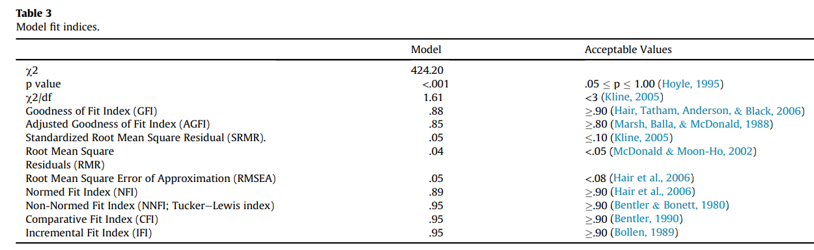
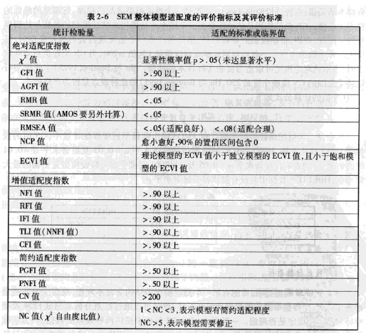

我们学生使用amos或者mplus做结构方程(SEM)或者验证性因子分析(CFA)以及其他一些潜变量模型的时候, 用到了很多拟合指标,
但是, 我们课本中通常只规定了指标好坏的标准, 但是有时候你会发现有些指标不管你的数据多完美, 都达不到要求,
那可能是因为你并没有理解这些指标。
下面我们汇总一些常见指标和常见问题, 希望对大家有帮助。
要汇报哪些拟合指标
在AMOS的默认的输出结果中有几十个指标, 都完全没有必要都放进自己的论文结果中,
但是到底要放哪些? 不同的学科不同的数据不同的业务场景都不一样, 但是我有一个简单的方法,
那就是参考文献, 你可以参考类似的一篇文献, 它里面汇报了什么指标你就汇报什么指标, 因为,
我看的文献多了, 每篇研究汇报不同的指标, 但是同一个学科或者同一个领域的研究, 通常汇报的指标是一样的,
这也是为了提要研究的可比性, 相似的研究可以比较。
下面我列出一些我在做结构方程中常用的一些指标, 仅供参考:
- 卡方和P值
- GFI/AGFI
- RMSEA
- NFI/GFI
- CFI/PCFI
- PNFI
一定要所有指标都满足标准吗
不是的!这是一个大误区。
实际上大部分指标能满足标准已经是庆幸了, 尤其当你的模型涉及到几十个观测变量的时候, 模型很复杂, 拟合指标很难达标。
所以, 按照大部分文献的常用方法, 我们需要汇报指标的具体值, 如果汇报的这几个中大部分都达到标准, 那么我们就可以认为模型成立。
不好的变量一定要删除吗
当然不是! 因为CFA最忌讳的是数据驱动, 为了得到好结果而修正模型。 因为CFA是理论驱动的方法, 你的理论认为某个题目是有效的, 在统计的时候发现这个题目不好, 那么, 你可以删除, 也可以不删除, 只是当你不删这个题目的时候, 需要从理论上解释为什么这个题目是必须的。
当你在做结构方程模型的时候, 如果有些路径不显著, 你可以据此修正你的理论, 删除这些路径, 也可以由此证明或者证伪你的假设, 而没必要修改数据模型。
各种指标的优良标准
指标的优良标准并不是只有一种, 我就在很多文献中看到很多种标准, 比如有的人认为GFI在0.8以上就行, 有的人认为必须得0.9以上,
其实不用太纠结, 如果你的GFI是0.89, 你认为这达到标准了, 这是完全可以的。
下面我列出一些指标的标准, 并付上标准的出处, 让你可以放心:

表格的出处文献可以从这里下载: The impact of cultural collectivism on knowledge sharing among
Model这一列是作者的模型的拟合指标值, 最右侧是指标标准, 我们可以看到, 作者的指标中有三个并不能达到标准, 但是作者认为自己的模型是成立的。
并且, AGFI这个指标在很多人看来要达到0.9才可以, 实际上0.8以上已经了不起了。在《结构方程模型——AMOS的操作与应用》这本书中, 也说AGFI应当达到0.9以上。
下图是这本书的截图:

但是, 事情还没这么简单, 作者的模型包括20个观测变量和4个潜变量, 这个模型还不算复杂, 如果你有100个观测变量和9个潜变量, 我敢100%确定, 你无法达到上述良好的结果。
我们必须考虑到模型的复杂度和样本量对拟合指标的影响, 下面是网上总结的指标如何收到模型复杂度和样本量的影响:
X2拟合优度检验（X2 goodness-of-fit test）
- 样本量影响: 受影响很大
经验性评价:
（1） 样本容量很小时，容易接受劣势模型；样本容量大时，容易拒绝所有拟合很好的模型；
（2） 在多个模型比较分析时非常有用；
拟合优度指数GFI
- 样本量影响: 受影响
经验性评价:
（1） 在最大似然和最小二乘法中比较稳定；
（2） 在CFA中，当factor loading 和样本容量较低时，容易接受模型；参数估计值比较低时，容易接受模型；
调整的拟合优度指数AGFI
- 样本量影响: 受影响
- 经验性评价:
（1） 可以按照模型中参数估计总数的数量对GFI进行调整；
（2） 估计参数相对与数据点总数越少或自由度越大，AGFI越接近GFI。
近似误差的均方根RMSEA
- 样本量影响: 受影响
- 经验性评价:
（1） 基于总体差距的指数，多数学者推荐为常用拟合指数；
（2） 比较敏感；
（3） 惩罚复杂模型。
比较拟合指数CFI
- 样本量影响: 不受影响
- 经验性评价:
（1） 应用不同的模型估计方法时很稳定；
（2） 即使是对小样本模型拟合时表现也很好；
（3） 在嵌套模型比较时很有用；
规范拟合指数NFI
- 样本量影响: 样本容量小时严重低估
- 经验性评价:
（1） 对数据非正态和小样本容量非常敏感；
（2） 不能控制自由度；
（3） 受样本容量影响大，渐不使用；
Tucker-Lewis指数（TLI 或NNFI）
- 样本量影响: 样本容量小时严重低估
- 经验性评价:
（1） 在最大似然估计时使用有较好稳定性，能正确对复杂模型进行惩罚，准确区分不同的模型，多数学者推荐；
（2） 在应用最小二乘法估计模型时比较差；
（3） 可以用于比较嵌套模型；
（4） 缺点：估计值变化很大，有时可以超出0~1的范围。
递增拟合指数IFI
- 样本量影响: 样本容量小时一般低估
- 经验性评价:
（1） 在应用最小二乘法估计模型时，优于TLI、NNFI。
（2） 在最大似然估计时，在小样本和偏差大的模型估计中，容易错误惩罚简约模型，奖赏复杂模型，因此渐不常用。
PNFI,PCFI,PGFI
- 样本量影响: 同时受样本容量和估计的参数比率影响
- 经验性评价:
（1） 属于依照简约原则调整后的指数，为原来的指数乘以省俭比率；
（2） 模型越简单，越不被惩罚。
（3） 受样本容量同以上相对应的指标，同时受到估计参数与饱和参数值的影响
AIC（Akaike information criterion）
- 样本量影响: 不受影响
- 经验性评价
用于模型比较
CAIC(Consistent Akaike information criterion)
- 样本量影响: 不受影响
- 经验性评价: 用于模型比较
ECVI(Expected cross-validation index)
- 样本量影响: 受影响
- 经验性评价:
（1） 用于模型比较；
（2） 在样本较小时，支持简约模型；随着样本数的增大转而支持较复杂但解释力更强的模型。
个人建议
（1） AGFI is not enough, 最好综合各种指标判断, 特别在CFA中，NNFI(TLI)更重要一些。
（2） 相对比较可靠的指标：NNFI, CFI, AGFI, RMSEA
（3） 坚实的理论比可靠的数据更重要！只要理论上有道理, 数据不太拟合也可!

{kind=link}